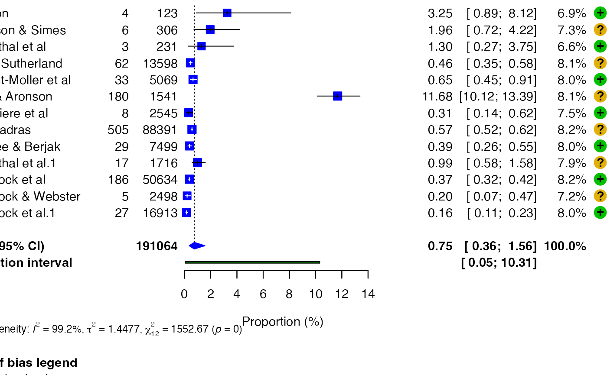

Adds a study-level risk-of-bias table to a fitted meta-analysis and draws the forest estimates and coloured domain judgements in one aligned figure. This is useful for review manuscripts in which readers need to compare each study's effect estimate with its methodological limitations.
Usage
forest_rob(
x,
rob_data,
studylab,
tool = "GENERIC",
domains = NULL,
overall = NULL,
levels = NULL,
colours = NULL,
has_overall = TRUE,
title = NULL,
new = FALSE,
...
)Arguments
- x
A supported metapropul meta-analysis object.
- rob_data
A data frame containing one row per study and risk-of-bias judgements in separate columns.
- studylab
Character string naming the study-label column in
rob_data. Labels must match the fitted study labels inx.- tool
Character string specifying the appraisal tool. See
plot_rob()for supported values.- domains
Character vector naming the judgement columns. When an overall column is included, identify it with
overall.- overall
Optional character string naming the overall-judgement column. If
NULL, a column indomainsnamedoverall(ignoring case) is detected automatically.- levels
Optional allowed judgement levels for
tool = "Custom".- colours
Optional named colours for
tool = "Custom".- has_overall
Logical indicating whether a custom tool has an overall judgement.
- title
Optional plot title. No title is drawn by default.
- new
Logical passed to the forest engine. The default
FALSEavoids an empty first page when a combined plot is written to a file device.- ...
Further arguments passed to
forest_meta(), includingsave_as,filename,width, andheight.
Value
Invisibly returns TRUE, as does forest_meta().
Details
Study labels are matched exactly and reordered internally to the fitted
meta-analysis. Missing fitted studies and duplicate labels are errors,
because either condition could place a judgement beside the wrong estimate.
Extra rows in rob_data are ignored with a warning. Up to ten non-overall
domains are supported by the underlying forest-plot engine.
Examples
# \donttest{
data(dat_bcg, package = "metapropul")
fit <- meta_prop(dat_bcg, "tpos", "npos", "author")
#> Warning: Duplicate study label(s) were made unique: Rosenthal et al, Comstock et al. See 'label_audit' in the result.
labels <- fit$meta$studlab
rob <- data.frame(
study = labels,
randomization = rep(c("Low", "Some concerns"), length.out = length(labels)),
reporting = rep(c("Low", "High"), length.out = length(labels)),
overall = rep(c("Low", "High"), length.out = length(labels))
)
forest_rob(
fit, rob, studylab = "study", tool = "Custom",
domains = c("randomization", "reporting", "overall"),
levels = c("Low", "Some concerns", "High")
)

#> Forest plot displayed in Viewer. Use save_as = 'pdf' or 'png' for publication-quality export.
# }